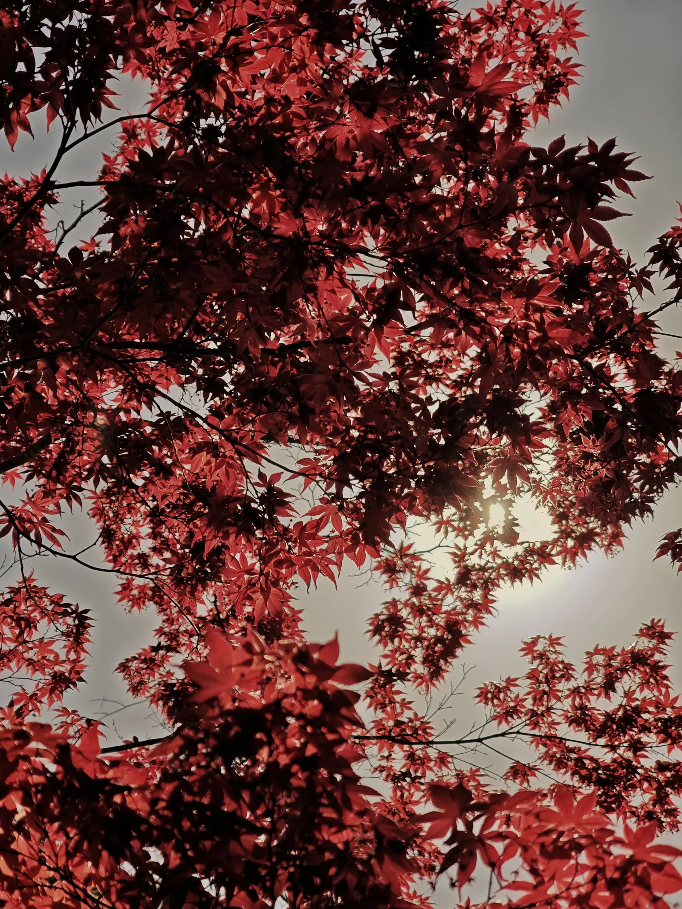

Actualités
Carnet de route
Les nouvelles et les articles de Laurent : parutions, expositions, presse, et ses réflexions sur le Japon et la photographie.

Les plus récents
Derniers articles

25 sept. 2026 · 1 min de lecture
Esthétiques japonaises en photographie paraît en allemand
L’édition allemande rejoint les éditions française, anglaise, espagnole et italienne.

17 sept. 2026 · 3 min de lecture
Fragrances du Japon fête sa première année
Un an après la parution de son premier recueil de nouvelles, nées de voyages et de rencontres au Japon.

2 sept. 2026 · 4 min de lecture
Après le hanami, le Japon à l’heure du kōyō
Le printemps suit les cerisiers ; l’automne a lui aussi son calendrier, ses voyages et ses pèlerinages.

28 août 2026 · 3 min de lecture
Tokowaka, toujours jeune
Durer en se renouvelant : un mot japonais et les arbres dont le feuillage traverse les saisons.
Tous les articles
Archives 2026
- 6 août 2026Les éditions Le Sully – Le Prunier : une rencontre qui a changé ma bibliothèque3 min
- 28 juil. 2026Quand les arbres ne peuvent pas fuir3 min
- 11 juil. 2026Une belle nouvelle… et le début d’un nouveau projet1 min
- 2 juil. 2026Corridor Éléphant : une nouvelle publication, cette fois en tant qu’auteur2 min
- 27 juin 2026Le honkadori : quand créer, c’est dialoguer avec les maîtres2 min
- 7 juin 2026Une nouvelle critique littéraire enthousiaste pour Fragrances du Japon sur NetGalley2 min
- 5 juin 2026Esthétiques japonaises en photographie poursuit son chemin en France et à l’international3 min
- 16 mai 2026Quatre pages dans Chasseur d’Images de juin 20263 min
- 11 mai 2026Lire encore, écrire enfin3 min
- 13 avr. 2026Paul Cupido, Thierry Grizard… et cette question du « vide » en photographie3 min
- 9 avr. 2026Nouvel article dans la revue Réponses Photo de mai 20261 min
- 2 avr. 2026Sortir de sa zone de confort pour aller vers l’essentiel2 min
- 20 mars 2026Article dans la revue Chasseur d’Images du mois d’avril1 min
- 8 mars 2026La complexité des esthétiques japonaises2 min
- 28 févr. 2026Exposition aux Docks de Marseille en mars 20261 min
- 17 févr. 2026Corridor Éléphant : un espace de visibilité pour la photographie émergente2 min
Presse et revues
Dans les pages des magazines

N° 476, juin 2026 : quatre pages et un entretien avec Benoît Gaborit

N° 389, mai 2026 : Pleine Présence dans la rubrique « L’essentiel »

Texte « Apprendre à regarder moins : vers une sensibilité néo-japoniste en photographie »

Revue n° 8, mars 2024 : photographie de couverture